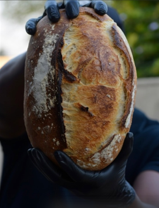

Welcome to The DEN
The Den Kitchen is an emergaing modern food manufacturing company redefining artisan bakery craft in Botswana. We combine high quality handcrafted products with scalable production systems, giving Botswana a business that is culturally rooted, operationally disciplined, and prepared for national expansion. Our values lies in controlled processes, efficient production workflows, diversified revenue streams and distributor relationships..
What passion baked into a loaf looks like:

Visit thedenbw to learn more about The DEN.
Did You Know?
The Den began as an artisan bakery dedicated to mastering dough, fermentation and intentional food craft. Over time, we expanded into cafés, restaurants, makerts and events, consistently recognised for quality, flavour and consistency. We are now entering a new growth phase: scalling production, building structured manufacturing for artisan bread and frozen mass produced bread products, and positioning. The Den as a leading modern food companies in Botswana.